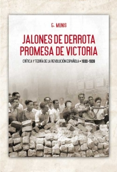
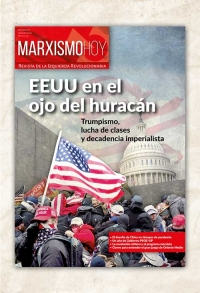

La sanidad privada se lucra con la pandemia del coronavirus ¡Nacionalizar ya el sector bajo el control de los trabajadores!
En medio de la mayor crisis sanitaria en un siglo, un sector se frota las manos por la expansión de sus negocios: la sanidad privada.Hay que entender que para los capitalistas solo existe una motivación: aumentar sin fin sus beneficios, ya sea a través de la guerra, de la trata de personas, de la explotación laboral sin límites o de la especulación con las necesidades sanitarias de la población.
Con numerosos hospitales públicos al borde del colapso, con enfermos hacinados en los pasillos y con miles de profesionales sanitarios cayendo contagiados por las falta de medidas y materiales de protección, la sanidad privada aprovecha para hacer negocio a toda costa.
Sí hay test de coronavirus, ¡para quien los pague!
Un buen ejemplo son las propias pruebas de coronavirus, esos test que, según explica el Gobierno, están agotados y son tan difíciles de obtener en los mercados internacionales.Sin embargo, como ha sido publicado por la prensa, eso es una rotunda mentira.Sí hay test, ¡pero para quien los pueda pagar!Numerosas empresas hacen su agosto ofreciéndolos al mejor postor.Laboratorios privados como Megalab, por ejemplo, ofrecen test por entre 140 y 230 euros, según el tipo de servicio (https://bit.ly/3406iX2).
Resulta lamentable que el Gobierno de coalición del PSOE y Unidas Podemos no haya tomado medidas inmediatas contra dichas empresas, en primer lugar tomando el control de las mismas y, en segundo lugar, deteniendo inmediatamente a sus responsables por especular y acaparar productos de primera necesidad en la lucha contra la pandemia.Más allá de la propaganda, este Gobierno simplemente ha pedido su colaboración.Obviamente, para los capitalistas solo es posible colaborar si se les ofrece más incentivos económicos, es decir, más negocio, más dinero.
La sanidad privada no colabora, hace negocios a costa de la muerte y la enfermedad
Por eso mismo los empresarios de la sanidad privada no están poniendo sus infraestructuras y su personal para combatir la pandemia; es más, incluso están planteando ERTEs a parte de sus plantillas u obligando a sus trabajadores a cogerse vacaciones, a pesar de ser totalmente necesarios.Algo que permite el Gobierno, reduciendo su actuación a solicitar información sobre respiradores en su poder, UCIs, camas, etc… Es decir, a pedir que le manden inventarios de material que, además, elaboran las propias empresas, algo que no parece muy fiable.Así hemos descubierto que la sanidad privada tiene en sus manos entre 1.500 y 3.000 respiradores que no están siendo utilizados y más de 2.000 camas de UCIs.
Por otro lado, aunque la patronal de la sanidad privada insiste en que están 'colaborando' en la lucha contra la pandemia, la realidad es bien distinta.En primer lugar, ¿por qué se oculta cuánto vamos a pagar todos, con nuestros impuestos, a la sanidad privada por atender a pacientes de coronavirus?Al tiempo que el presidente de la patronal señala que no es el momento de hablar de dinero, ha cifrado en 250 euros al día la hospitalización de un paciente de coronavirus y entre 600 y 700 euros si es ingresado en una UCI.¿Por qué las Consejerías de Sanidad no dicen cuánto dinero público van a regalar a todas estas multinacionales?¿Por qué el Ministerio de Sanidad no exige transparencia a este respecto?¿Es aceptable que estas multinacionales amasen beneficios a costa de miles de vidas?La realidad es que su motivo de existencia es hacer caja, y ya tendrá apalabrados los beneficios multimillonarios a obtener gracias a la pandemia.
Nacionalización inmediata de la sanidad privada y de todos los servicios externalizados
El Gobierno debe tomar medidas reales en beneficio de la inmensa mayoría de la población.Y eso requiere ir más allá de declarar que se pone la sanidad privada bajo el control del Ministerio de Sanidad.No, tomar el control efectivo y real de la sanidad privada es impedir que se haga negocio, es nacionalizar todos los servicios sanitarios y los servicios relacionados con el sistema de salud que están privatizados produciendo beneficios para un puñado de multinacionales.
No solo los hospitales y clínicas privadas, sino los laboratorios, los servicios de limpieza, lavandería o cocina, etc… Muchas de estas subcontratas no están contratando al personal necesario para garantizar estos servicios en las instalaciones hospitalarias, a pesar de la insistencia de numerosos sindicatos médicos como el Movimiento Asambleario deTrabajadores/as de la Sanidad (MATS), que señala que tan necesarios son médicos y enfermeras como personal de limpieza.Estas contratas, que ya trabajaban al límite, continúan ajustando de cara a garantizar los beneficios de individuos como Florentino Pérez.
Solo de esta manera, mediante la completa nacionalización bajo el control de las y los trabajadores, se podrá acceder a todos esos recursos, inventariarlos, conocer exactamente las cuentas de todos esos entramados empresariales y poner, entonces sí, todos los recursos sanitarios de país al servicio del conjunto de la población de forma equitativa y centrando la atención en quienes más lo necesiten.Mientras se mantenga la propiedad privada en el sector, los capitalistas, propietarios de esos medios, mantendrán el control utilizando dichos recursos para continuar haciendo negocios.¡Así funciona el capitalismo!
Un sector dominado por el capital financiero.¡La banca siempre gana!
Pero quieren aún más.Por eso están solicitando al Gobierno un plan específico de ayudas por 4.500 millones de euros, afirmando que de lo contrario entrarán en bancarrota al carecer de liquidez.Así lo ha señalado la Alianza de la Sanidad Privada Española (ASPE), la patronal del sector, que pide que se financie el 75% de su facturación durante los próximos dos meses para hacer frente a las operaciones canceladas, o que se les exima de pagar las cuotas a la Seguridad Social, entre otras medidas.
Estamos hablando de un sector dominado por un puñado de multinacionales, a su vez propiedad de fondos de inversión y de bancos.Es de nuevo el sector financiero, el mismo que está recibiendo ayudas masivas de los Gobiernos, de la UE o de la Reserva Federal norteamericana.
Por ejemplo, la principal multinacional del sector en el Estado español es el Grupo Quirón, a su vez propiedad de la multinacional alemana Fresenius, que a su vez está controlada por fondos de inversión como Allianz Global Investors, DWS Investment, The Vanguard Group o BlackRock.Otro ejemplo es Ribera Salud, controlado por el Banco Sabadell y por el grupo norteamericano Centene ( a su vez controlado por fondos de inversión como The Vanguard Group o BlackRock).O Vithas Sanidad, controlado por la farmacéutica Almirall, de la familia Gallardo, y por La Caixa.Y así podríamos seguir con la decena de grupos sanitarios privados que controlan el mercado, a los que habría que añadir las diversas instituciones gestionadas por una de las mayores empresas capitalistas del Estado, la Iglesia Católica, que no deja de hacer grandes negocios con la caridad desde hace siglos.¿Son estos individuos los que le piden al Gobierno recursos, y los que señalan que pueden verse abocados a la bancarrota?¡No nos tomen el pelo!
Un negocio pagado por todos a costa de la sanidad pública
La sanidad privada factura hoy cerca de 37.000 millones de euros, un tercio de todo el gasto sanitario.Mientras el negocio de la privada no ha dejado de crecer, llegando en 2017 a alcanzar la cifra récord de casi 8.000 millones de euros en conciertos con las administraciones públicas, la sanidad pública ha sufrido constantes recortes y ajustes.
Aparte de los más de 10.000 millones de ajuste implementados por el Gobiernos central y los Gobiernos autonómicos durante los años más duros de la crisis, se calcula que se han dejado de invertir otros 8.000 millones en el sistema sanitario público.Todo esto ha significado menos camas, menos médicos, menos enfermeras, menos personal y medios en general, que ahora, cuando se necesitan, ponen en evidencia la degradación brutal sufrida por la sanidad pública, con consecuencias mortales para la población trabajadora más pobre y vulnerable.Una política desarrollada de forma brutal por el PP en Madrid, Valencia o Galicia, por el PSOE en Andalucía, o por CiU, ahora el PDCat, o el PNV en Catalunya y Euskadi.Todos han coincidido en el modelo, ¡convertir la sanidad en un lucrativo negocio!

Por eso mismo es necesario que se depuren responsabilidades, tanto respecto a los actuales responsables como a aquellos que se han retirado y ahora muchos de ellos se sientan en los Consejos de Administración de grandes multinacionales, algunas sanitarias.Ellos nos han traído hasta aquí.Es necesario abrir procesos de investigación donde se depuren responsabilidades penales, ya que las consecuencias de esas decisiones y de esas políticas criminales han dado lugar a una auténtica matanza.¡Hay responsables con nombres y apellidos y deben pagar!
Los capitalistas acaparan y especulan, y encima se hacen publicidad
Otro buen ejemplo de cómo el capitalismo trafica con las necesidades humanas es la oleada especulativa a la que estamos asistiendo en todo el mundo respecto a mascarillas, respiradores y otros materiales de primera necesidad.Aunque la prensa plantea esencialmente que esta especulación se produce fuera de nuestras fronteras, en la oscuridad, sin señalar claros responsables, no es cierto.Los responsables son los mismos que controlan el grueso de la riqueza mundial, los banqueros, los grandes capitalistas, las grandes empresas de transporte...Pero además no tenemos que salir de nuestras fronteras para buscar a esos buitres.
Cada día nos encontramos con noticias de grandes empresas que están donando mascarillas y otros productos sanitarios fundamentales en la lucha contra la pandemia: Inditex, Mango, El Corte Ingles, e incluso equipos de futbol… Pero la pregunta que hay que hacerse, frente a esta campaña de marketing, es por qué estas multinacionales tiene esta cantidad de mascarillas y de productos sanitarios, por qué los acaparan, y por qué el Gobierno no las ha intervenido inmediatamente.¿Es aceptable que multinacionales capitalistas acumulen toneladas de materiales de primera necesidad, y qué tengamos que esperar a su buena voluntad para poder salvar vidas?¡Es una auténtica vergüenza y una burla!
Es necesario intervenir ya en todas estas empresas y exigir inmediatamente responsabilidades.La realidad es que estas grandes empresas se comportan como auténticos acaparadores y especuladores, que es como actúan en su día a día de cara a hacer suculentos negocios.Ocurre igual que con la sanidad privada, ven una oportunidad de negocio y la aprovechan sin importar las consecuencias.
Es la lógica del capitalismo, de un sistema que aunque tiene los recursos para hacer frente a la pandemia, la tecnología y el conocimiento científico, no los pone ni los pondrá a disposición de la humanidad.Por eso mismo, solo queda un único camino, la organización de la clase trabajadora y su acción directa contra la pandemia, contra los recortes y la austeridad, y contra el capitalismo.Nada funciona, ¡excepto la clase obrera!
Posted On: 2020-04-01T00:00:00

Content Date: 2020-04-01
Download Date: 2021-05-13
Document ID: L0C04C9RB